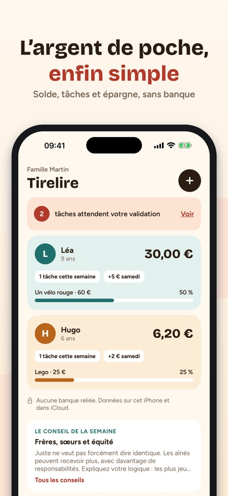
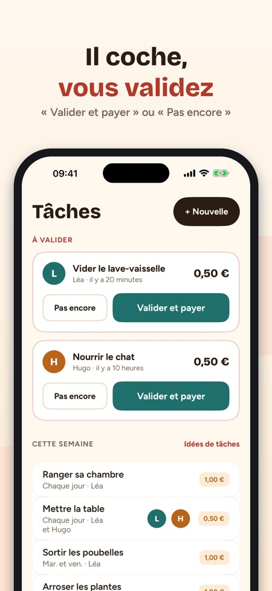
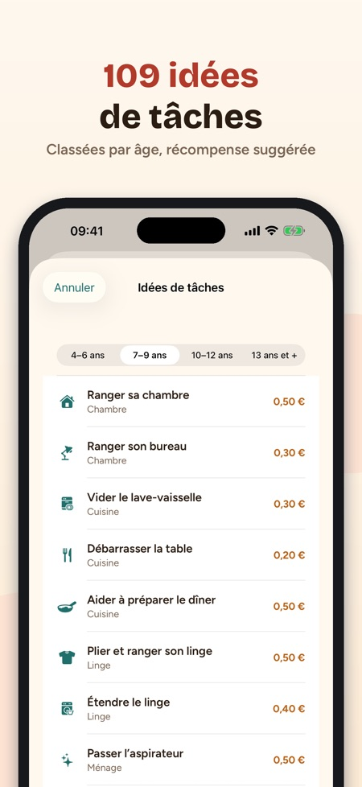

Tirelire tient les comptes de l'argent de poche de vos enfants, récompense les tâches et les aide à épargner. Aucune banque reliée, aucune carte.



Non, aucune banque reliée et aucune carte. L'app garde seulement les comptes, et les pièces restent dans la vraie tirelire.
L'enfant coche, vous validez avec « Valider et payer » ou « Pas encore ». Fait à moitié ? Vous pouvez payer la moitié.
Oui, il est ajouté tout seul le jour choisi, même si l'app est restée fermée.
Oui, par le partage iCloud : mêmes soldes, et chacun valide depuis son iPhone.
L'app est utilisable sans achat avec un enfant.
Non. Un achat unique débloque les enfants illimités, le partage avec l'autre parent, le mode enfant et le widget.
Euros, couronnes, livres, francs suisses ou dollars.
Tirelire tient les comptes de l’argent de poche de vos enfants, récompense les tâches et les aide à épargner pour ce qui compte pour eux. Aucune banque reliée, aucune carte : l’app garde seulement les comptes, et les pièces restent dans la vraie tirelire.
LE SOLDE DE CHAQUE ENFANT
• Une carte par enfant : solde, tâches de la semaine, prochain argent de poche et objectif
• L’argent de poche est ajouté tout seul le jour choisi, même si l’app est restée fermée
• + Ajouter / − Dépense en deux touches, avec l’historique complet
DES TÂCHES QUI RAPPORTENT
• 109 idées de tâches classées par âge (4–6, 7–9, 10–12, 13 ans et plus), avec une récompense suggérée
• Une fois, chaque jour, certains jours ou une fois par semaine
• L’enfant coche, vous validez : « Valider et payer » ou « Pas encore ». Fait à moitié ? Payez la moitié.
UN OBJECTIF QUI MOTIVE
• 32 modèles d’objectifs : vélo, jeu, sortie, cadeau…
• L’anneau montre où il en est et la date estimée à son rythme
• « Aller plus vite » propose des tâches adaptées à son âge
UN MODE ENFANT TOUT SIMPLE
• Sur votre iPhone ou sur le sien : son solde, son objectif et ses tâches du jour
• Il coche quand c’est fait ; Face ID ou le code de l’iPhone pour revenir à l’espace parents
• 14 badges à gagner
ENTRE LES DEUX PARENTS
• Invitez l’autre parent avec le partage iCloud : mêmes soldes, chacun valide depuis son iPhone
• 35 conseils pour parler d’argent avec vos enfants, selon leur âge
• Widget, rappel le jour de l’argent de poche, export CSV, en euros, couronnes, livres, francs suisses ou dollars
ACHAT
Utilisable sans achat avec un enfant. Un achat unique débloque les enfants illimités, le partage avec l’autre parent, le mode enfant et le widget. Pas d’abonnement.
Les données de la famille restent sur l’iPhone et dans votre iCloud. Statistiques d’utilisation anonymes seulement si vous l’acceptez, modifiable dans Réglages ; rien n’est envoyé en mode enfant.